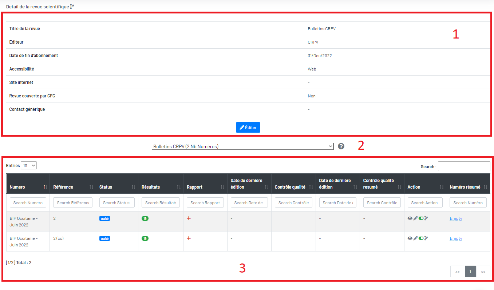

Détail d'un revue scientifique
il y a trois blocs, en haut c’est le détail de la revue, en bas ce sont ses numéros et au milieu c’est un filtre de revues, il bascule vers une autre revue.

Vous trouverez ci-dessus le détail d’une revue, il y a trois blocs, en haut c’est le détail de la revue, en bas ce sont ses numéros et au milieu c’est un filtre de revues, il bascule vers une autre revue.
Le numéro possède un statut, le nombre de mots-clés trouvés, un rapport, un résumé, et des actions.
Vous avez ici un bouton bleu  en bas pour ajouter l’autre numéro de cette revue.
en bas pour ajouter l’autre numéro de cette revue.